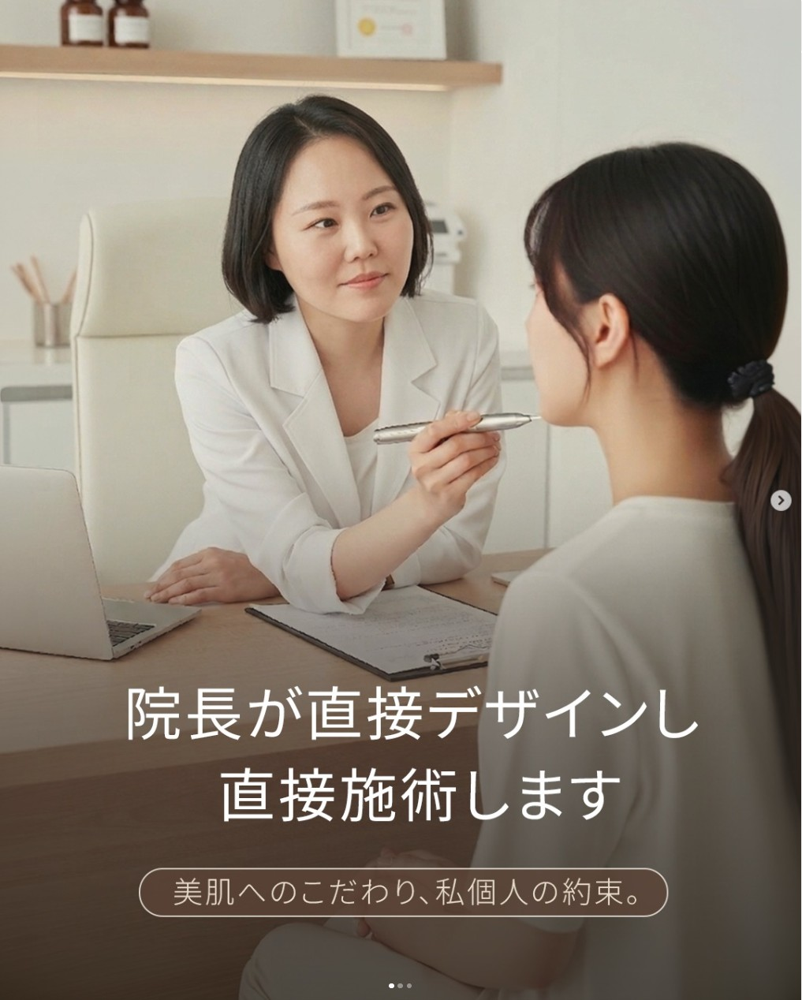
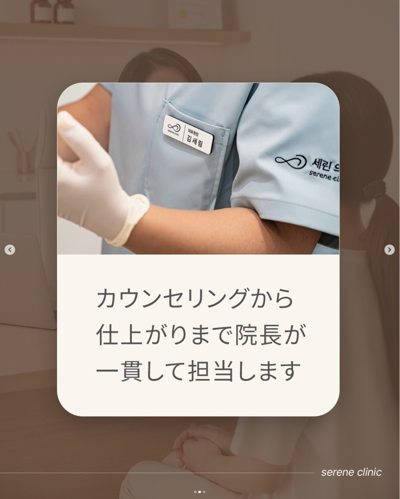
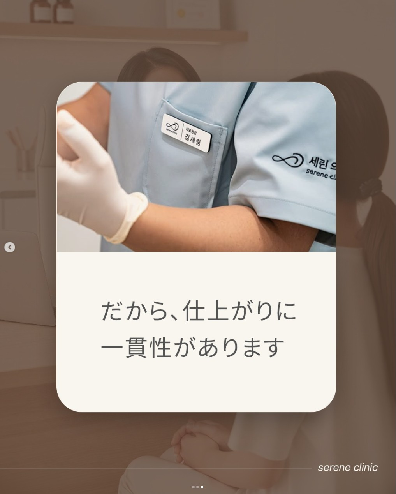

01최우수 · 확장
Doctor Pointer
의사 책임성과 일관된 진료 메시지가 검토 행동을 강하게 유도
광고비233,309원
CTR2.27%
프로필 방문669회
방문당 비용349원
왜 좋은가
MOF에서 환자가 확인하고 싶은 핵심 질문인 ‘누가 상담하고 누가 시술하는가’를 직접 해결합니다. 원장 직접 상담·시술, 얼굴형 맞춤 디자인, 책임 진료라는 증거가 명확해 CTR 2.27%, 프로필 방문 669회, 방문당 비용 349원을 기록했습니다.
다음 액션
메인 MOF 소재로 유지하고, 원장 얼굴·실제 상담 장면·시술 장면을 각각 첫 장으로 바꾼 변형본을 제작합니다. 프로필 방문자와 저장자를 BOF LINE 상담 소재로 재접촉합니다.